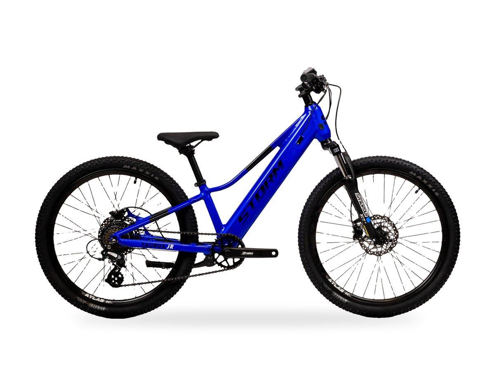
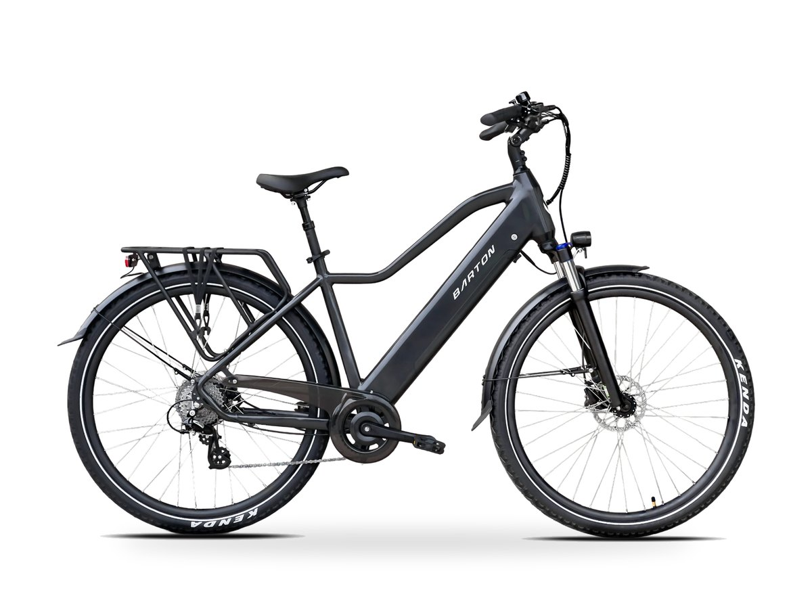
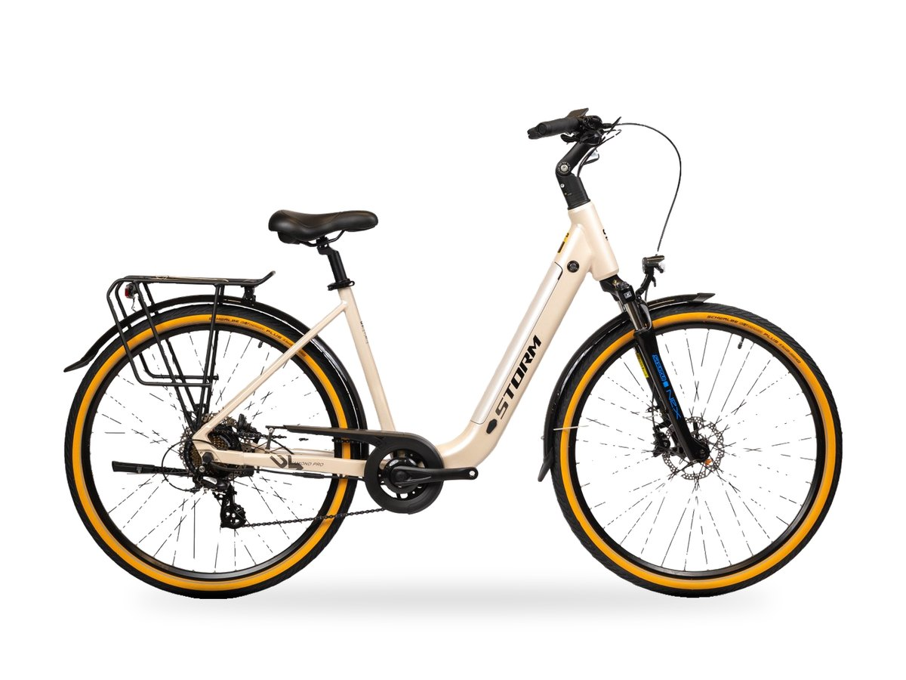

Storm · Dziecięce
Storm E-Taurus Junior 26 1.0
Silnik w tylnej piaście Bafang G010 250 W / 35 Nm · koła 26" · rama 15"
- Strona główna
- Sklep
- Rowery dziecięce
- Storm E-Taurus Junior 24 1.0

Storm · Rowery dziecięce
Zapytaj o ten rowerZadzwoń do sklepu
Storm E-Taurus Junior 24 1.0
Silnik w tylnej piaście Bafang G010 250 W / 35 Nm · koła 24" · rama 11"
5 499 zł
Dostępność potwierdzimy telefonicznie lub w sklepie- Zobacz rower na żywo w sklepie przy ul. Bielskiej 223 w Bulowicach.
- Doradztwo — pomożemy dobrać rozmiar i model do Twoich tras.
- Autoryzowany serwis — przeglądy i naprawy na miejscu w Bulowicach.
Mniejszy brat E-Taurusa 26 – elektryczny góral na kołach 24 cali dla dzieci, które wyrosły już z typowych rowerków. Delikatne wspomaganie w tylnej piaście ułatwia podjazdy, a amortyzowany widelec, hydrauliczne tarcze i szerokie opony Maxxis sprawiają, że rower dobrze radzi sobie na szutrach i leśnych ścieżkach.
| Silnik | Bafang G010, w tylnej piaście, 250 W, 35 Nm |
|---|---|
| Bateria | zintegrowana w ramie |
| Koła | 24", opony Maxxis 24 x 2.25 |
| Rama | aluminiowa T6101, hydroformowana |
| Napęd | 7 biegów Shimano Altus (RD-M310, SL-M310), wolnobieg MF-TZ500 14-28T, łańcuch KMC Z8, korba Bafang 38T |
| Hamulce | tarczowe hydrauliczne Shimano MT-210 |
| Amortyzacja | widelec Suntour NEX-E25 |
| Rozmiary | 11" |
| Warianty | kolory: niebieski, czarny matowy/pomarańczowy |
Zobacz także
Podobne produkty
Barton · Miejskie
Barton E Smart 2.0
Silnik w tylnej piaście Ananda 250 W · bateria 468 Wh · koła 26"/28"

Barton · Miejskie
Barton E Smart 2.0 MEN
Silnik w tylnej piaście Ananda 250 W · bateria 468 Wh · koła 28"

Storm · Miejskie
Storm E-Diamond Pro 28 2.0 MS
Silnik w tylnej piaście Bafang G010 250 W / 35 Nm · bateria 504 Wh · koła 28"